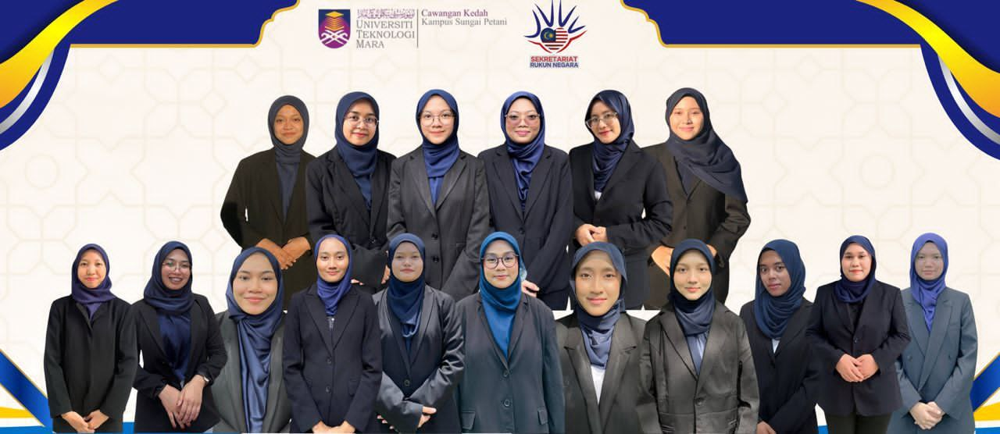
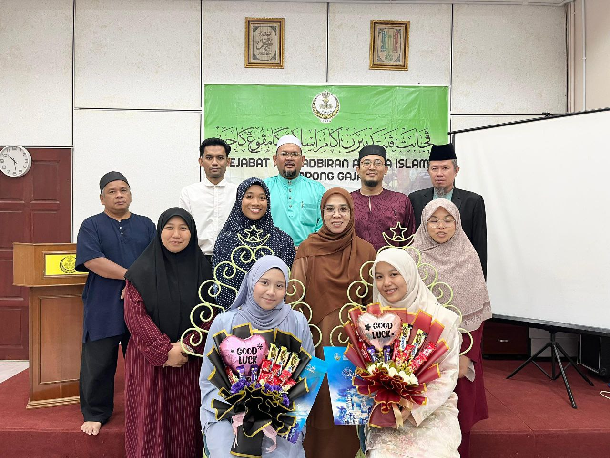
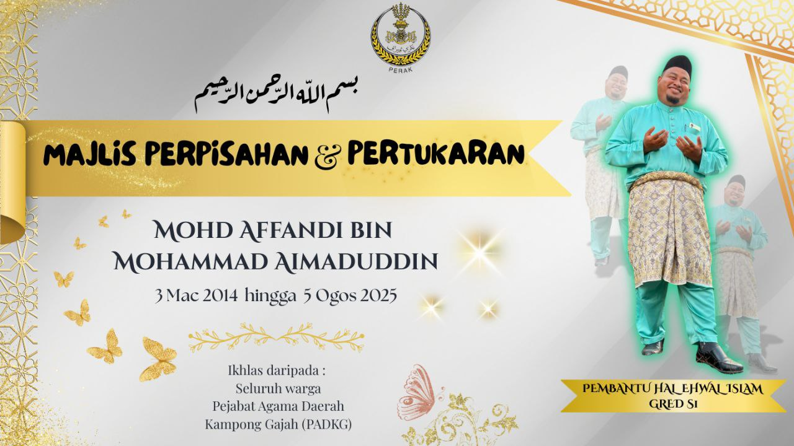
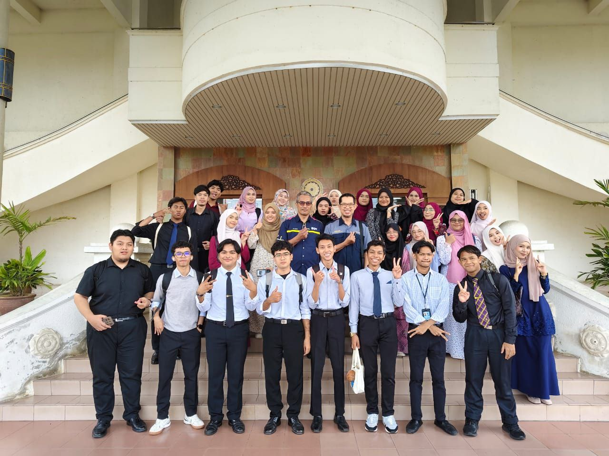
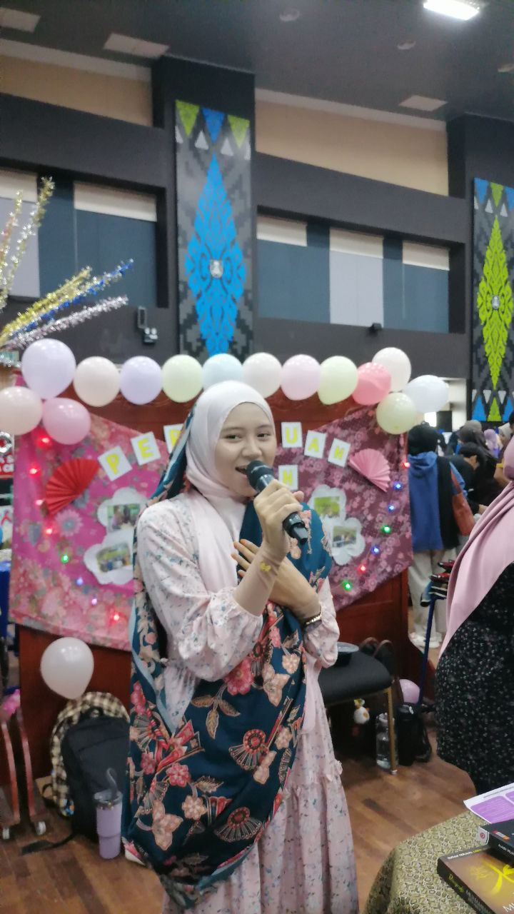

|

I become as Treasurer of Sekretariat Rukun Negara which is one of my club that i joined since semester 1. At this club I have learned how to manage moneys also be a good finance manager. At the end of last semester, I went to my training at Jabatan Agama Islam.I was contributing and stayed at Administration Department as well as managed their organization's records This is my first internship task which is designing poster for thier staff's unit exchange. This semester we all from IM110 students have experienced inviting to National Archive of Kedah at Alor Setar and we were make research there. I have been selected to be as spokeperson for IMAN's Club at ClubFest and that was the first time I spoke in front of people at Perdana Hall. |